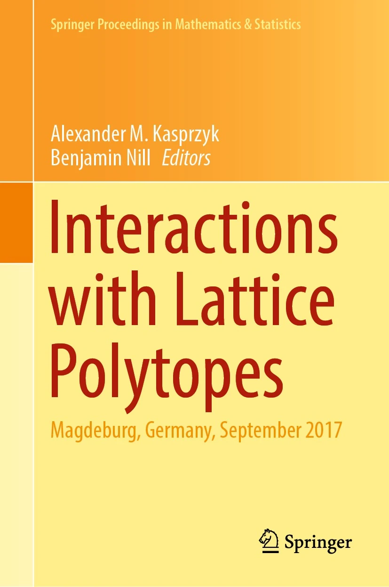

Interactions with Lattice Polytopes

Interactions with Lattice Polytopes, Alexander Kasprzyk and Benjamin Nill (eds), Springer Proceedings in Mathematics & Statistics, 386, Springer, 2022.[doi/Amazon/Blackwell's]
Contents
-
Difference Between Families of Weakly and Strongly Maximal Integral Lattice-Free Polytopes, Gennadiy Averkov, 1-10.[arXiv]
-
On the Fine Interior of Three-Dimensional Canonical Fano Polytopes, Victor Batyrev, Alexander Kasprzyk, and Karin Schaller, 11-47.[arXiv]
-
Lattice Distances in 3-Dimensional Quantum Jumps, Mónica Blanco, 49-72.
-
Flag Matroids: Algebra and Geometry, Amanda Cameron, Rodica Dinu, Mateusz Michałek, and Tim Seynnaeve, 73-114.[arXiv]
-
Classification of Minimal Polygons with Specified Singularity Content, Daniel Cavey and Edwin Kutas, 115-134.[arXiv]
-
On the Topology of Fano Smoothings, Tom Coates, Alessio Corti, and Genival da Silva Jr., 135-156.[arXiv]
-
Computing Seshadri Constants on Smooth Toric Surfaces, Sandra Di Rocco and Anders Lundman, 157-179.
-
The Characterisation Problem of Ehrhart Polynomials of Lattice Polytopes, Akihiro Higashitani, 181-195.
-
The Ring of Conditions for Horospherical Homogeneous Spaces, Johannes Hofscheier, 197-220.
-
Linear Recursions for Integer Point Transforms, Katharina Jochemko, 221-231.[arXiv]
-
Schubert Calculus on Newton–Okounkov Polytopes, Valentina Kiritchenko and Maria Padalko, 233-249.[arXiv]
-
An Eisenbud–Goto-Type Upper Bound for the Castelnuovo–Mumford Regularity of Fake Weighted Projective Spaces, Bach Le Tran, 251-262.[arXiv]
-
Toric Degenerations in Symplectic Geometry, Milena Pabiniak, 263-286.[arXiv]
-
On Deformations of Toric Fano Varieties, Andrea Petracci, 287-314.[arXiv]
-
Polygons of Finite Mutation Type, Thomas Prince, 315-333.[arXiv]
-
Orbit Spaces of Maximal Torus Actions on Oriented Grassmannians of Planes, Hendrik Süß, 335-349.[arXiv]
-
The Reflexive Dimension of (0,1)-Polytopes, Akiyoshi Tsuchiya, 351-364.